ОТКРЫТОЕ ПЕРВЕНСТВО
КДЮСШ "ОЛИМП"
среди юношей и девушек 2006-2008 г.р. и 2001-2003 г.р.
 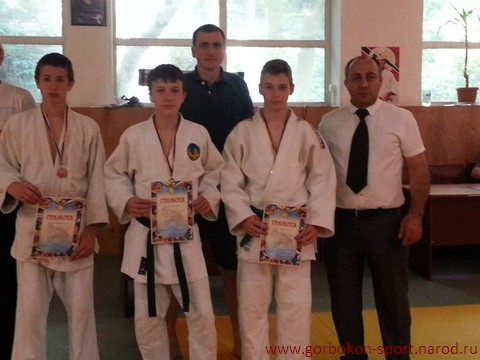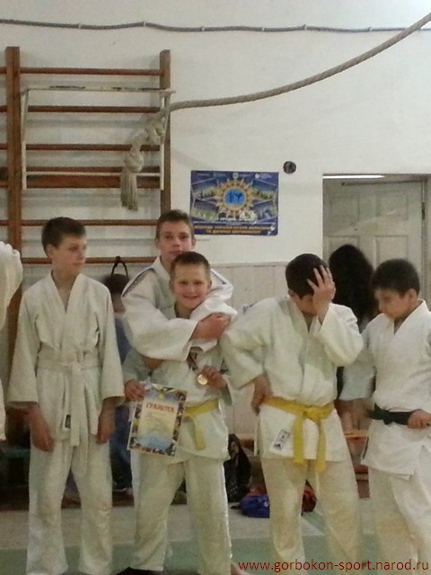
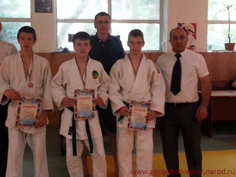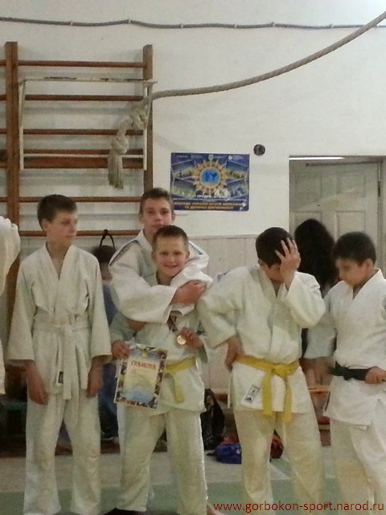
 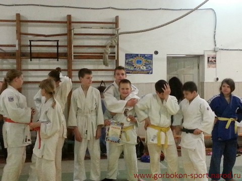
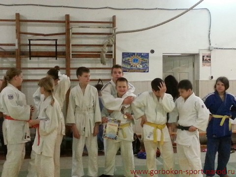
 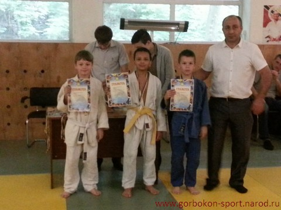
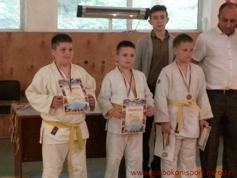
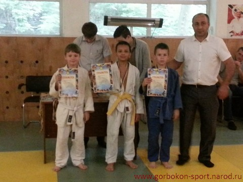
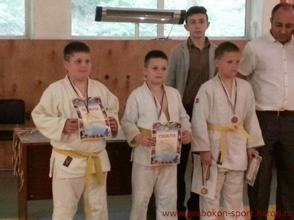
 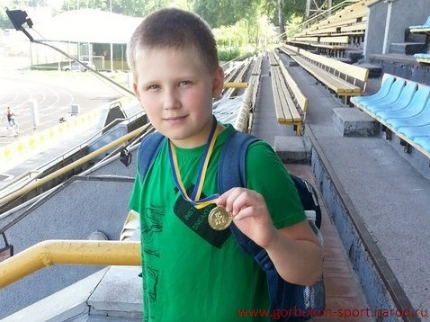
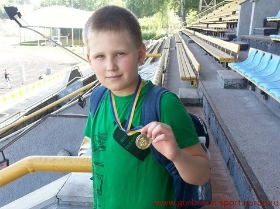 МАЙОРОВ НАЗАР занял 2-е место в весовой категории + 38 кг,
ВОЙКИН ЛУКАС занял 2-е место в весовой категории - 34 кг,
БОРОДАЙ ДАНИЛО занял 2-е место в весовой категории - 26 кг,
ДРОБОВИЧ ВОВА занял 3-е место в весовой категории - 22 кг,
среди юношей и девушек 2006-2008 года рождения;
ЗОЛОТАРЕВ АЛЕКСЕЙ занял 1-е место в весовой категории - 60 кг,
КУЗЬМЕНКО ДЕНИС занял 1-е место в весовой категории - 46 кг,
ДРОБОВИЧ ДАША заняла 2-е место в весовой категории - 36 кг,
ШАЕВ МАКСИМ занял 3-е место в весовой категории - 30 кг
среди юношей и девушек 2001-2003 года рождения в Открытом Первенстве КДЮСШ "ОЛИМП" , проходившем 27-28 мая 2015 года в городе Киеве.
ДРОБОВИЧ ДАША
третье место, Открытое Первенство г. Киева среди юношей и девушек 2003-2004 г.р.
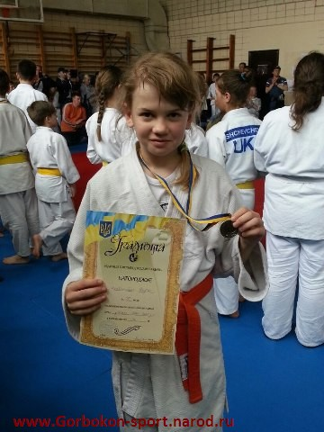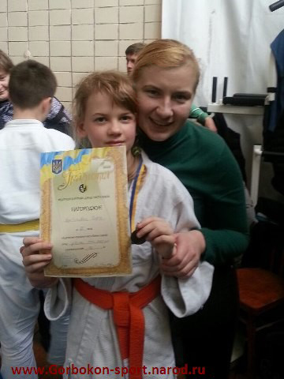
ДРОБОВИЧ ДАША заняла третье место в Открытом Первенстве г. Киева среди юношей и девушек 2003-2004 года рождения в весовой категории - 36 кг, проходившем 25 апреля 2015 года в городе Киеве.
ДОРОШЕНКО НИКИТА
третье место, Всеукраинский турнир на призы Нугзара Месаблишвили 2014 год.


Дорошенко Никита занял третье место в Всеукраинском турнире на призы Нугзара Месаблишвили по дзюдо среди юношей 2001-2003 года рождения в весовой категории - 46 кг, проходившем 26-27 апреля 2014 года в городе Киеве.
ГУГУЕВ АНТОН
третье место, турнир по дзюдо “IPPON на призы Деда Мороза” 2013 год.
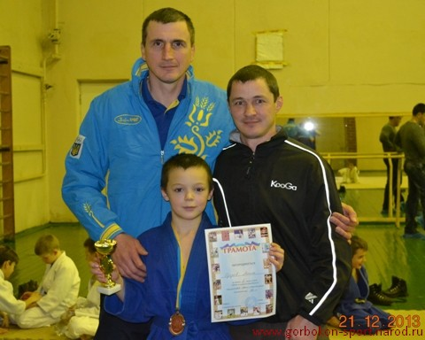
 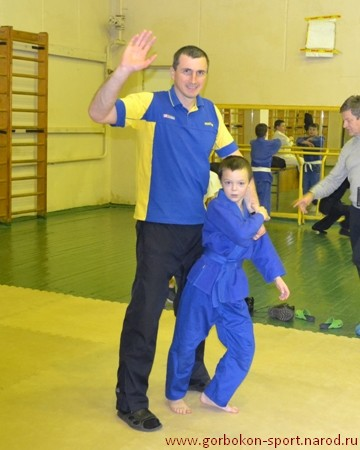
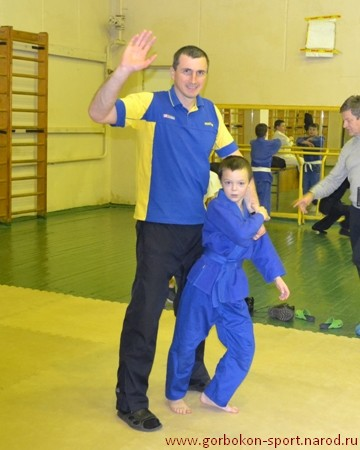
Гугуев Антон
занял третье место на турнире по дзюдо “IPPON на призы Деда Мороза” среди юношей 2002-2004 года рождения в весовой категории - 32 кг, проходившем 21 декабря 2013 года в городе Киеве.
НУРАЛИЕВ ДЖАБРАИЛ И
ТКАЧЕНКО ВАЛЕРИЙ
третье место, турнир по дзюдо “IPPON на призы Деда Мороза” 2013 год.
Нуралиев Джабраил
занял третье место в весовой категории - 46 кг и Ткаченко Валерий - третье местов весовой категории - 42 кг на турнире по дзюдо “IPPON на призы Деда Мороза” среди юношей 2002-2004 года рождения, проходившем 21 декабря 2013 года в городе Киеве.
БАКАЛЮК ЗАХАР
третье место, открытое первенство "ОЛИМП" 2011 год.
 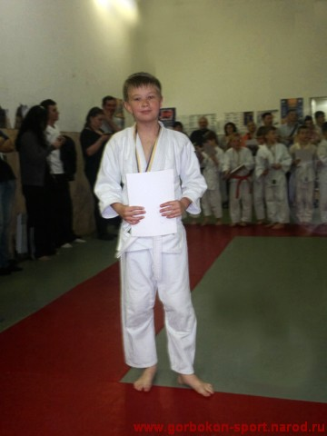
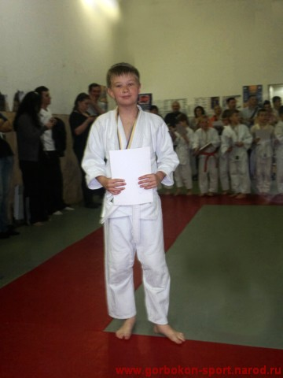
Бакалюк Захар занял третье место в открытом первенстве "Олимп" по дзюдо среди детей 2002-2004 года рождения в весовой категории + 34 кг, проходившем 15 мая 2011 года в городе Киеве.
ЖУЧКОВ АЛЕКСАНДР
третье место, первенство города Киева 2011 год.
 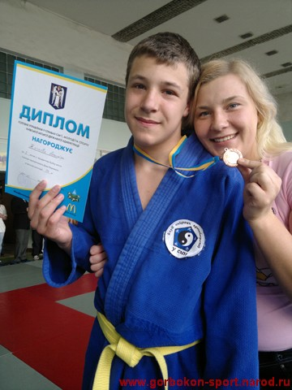
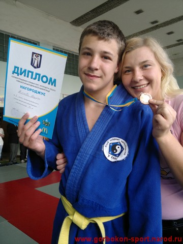
Жучков Саша занял третье место в первенстве города Киева по дзюдо среди юношей и девушек 1997-1998 года рождения в весовой категории + 73 кг, проходившем 29 апреля 2011 года в городе Киеве.
БОРУК ДМИТРИЙ
первое место, открытое первенство города Киева. 2011 год.
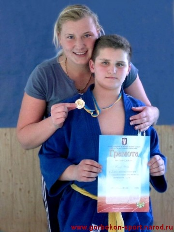
 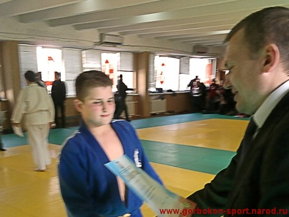
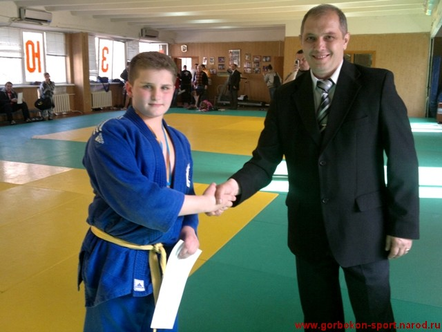
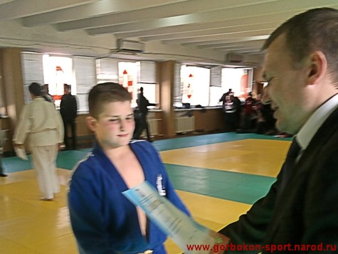
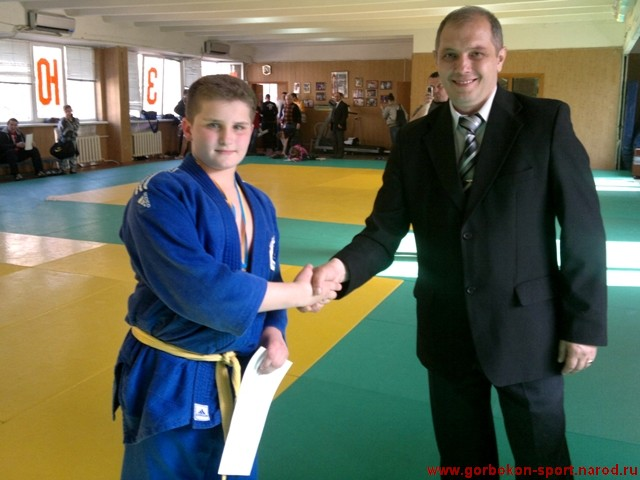
Борук Дмитрий занял первое место в открытом первенстве города Киева среди юношей и девушек 1999-2000 года рождения в весовой категории + 60 кг, проходившем 23 апреля 2011 года в городе Киеве.
БОЙКО АНДРЕЙ
третье место, Всеукраинский турнир, посвящённый 66-й годовщине освобождения Киева. 2009 год.
19 декабря 2009 года, в День Святого Николая, в спортивном зале с/ш №111 имени С.А.Ковпака Дарницкого района столицы прошёл Всеукраинский турнир, посвящённый 66-й годовщине освобождения города Киева от фашистских захватчиков. Борьбу за награды турнира вели 133 юных дзюдоиста 1997-99 г.р., представлявших 19 команд из семи регионов нашей Украины. Киев был представлен восемью командами.
Наш воспитанник Андрей Бойко (фото) занял третье место в весовой категории до 60 кг, уступив Сергею Кривчачу (1 место, Харьков) и Александру Духневичу (2 место, Харьков) разделив пьедестал с киевлянином Артёмом Убилава. Медали вручал двукратный чемпион Европы, призер Мира по дзюдо Геннадий Белодед.
В церемонии соревнований также приняли участие чемпион Мира по дзюдо Георгий Зантарая, и чемпион Мира по дзюдо среди юниоров Кеджау Ньябали.


{kind=link}
{kind=link}
{kind=link}
{kind=link}
{kind=link}
{kind=link}
{kind=link}
{kind=link}
{kind=link}
{kind=link}
{kind=link}
{kind=link}
{kind=link}
{kind=link}
{kind=link}
{kind=link}